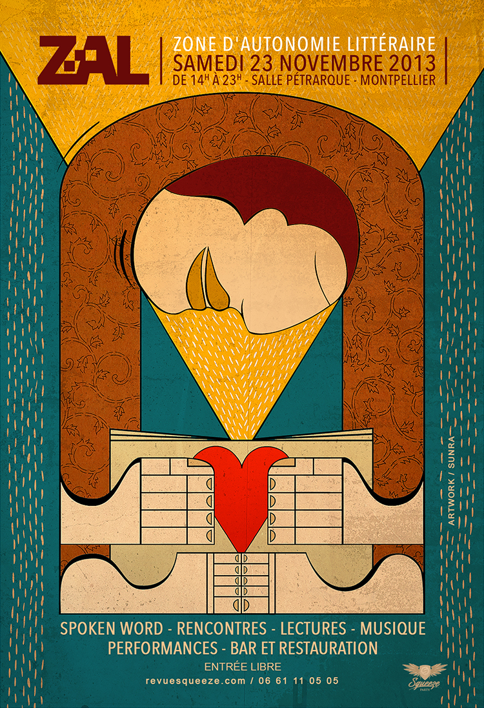

Demain nous appartient - Les auteurs numériques
Pour la troisième Zone d’autonomie littéraire à Montpellier, le 23 novembre, j’interviens en duo avec Juliette Mezenc. Elle présentera son désormais célèbre Pecha Kucha et je tenterai de me prêter à cet exercice du vingt images vingt secondes par image. Le but : raconter le destin de quelques textes nés sur le Net. De montrer que le circuit traditionnel de l’édition est désormais bouleversé.

ZAL 2013
Suite | 2013 | Sommaire | Texte publié samedi 12 octobre 2013